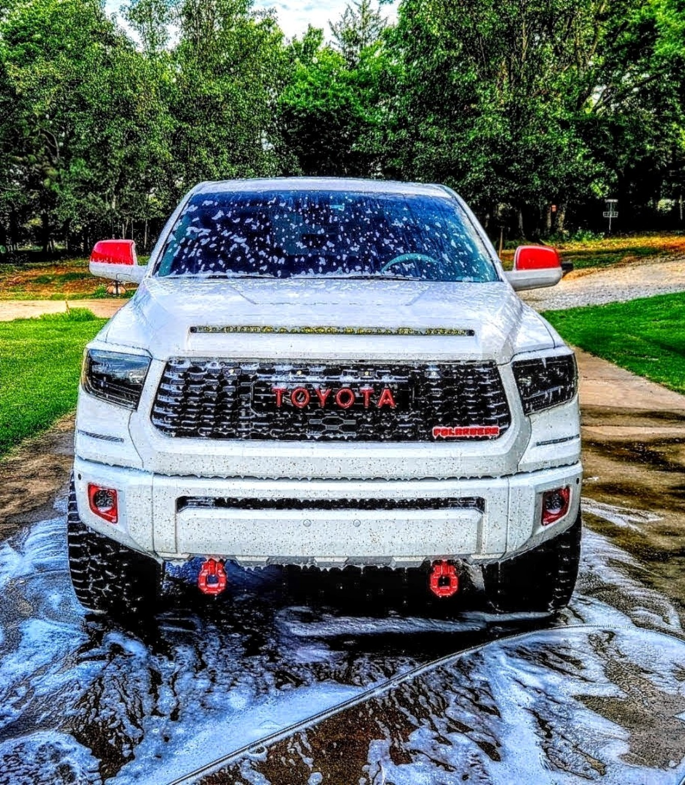

Bringing surfaces back from the dead
Get Free Quote TodayThe Grime Reaper Power Washing Company is a locally owned residential and commercial power washing business serving Oklahoma City and surrounding communities
The company focuses on reliable, high-quality exterior cleaning including driveway cleaning, deck cleaning, trash can cleaning, commercial property washings, and car detailing services

Oklahoma's red dirt is more than just dust - it stains concrete, siding, driveways, and vehicles over time. Regular cleaning with a standard hose isn't enough to remove buildup that can damage surfaces and make your property look worn down.
Professional power washing removes deep-set dirt, mold, mildew, and grime, helping protect your investment while restoring the clean, fresh look of your home or business.
At the Grime Reaper, we don't just clean - we bring surfaces back from the dead.
Looking for a specific service? Learn more about what we have to offer:
Call, Text, or email for a Free Quote
Phone: (405)933-5515
Privacy Policy Terms & Conditions Refund Policy